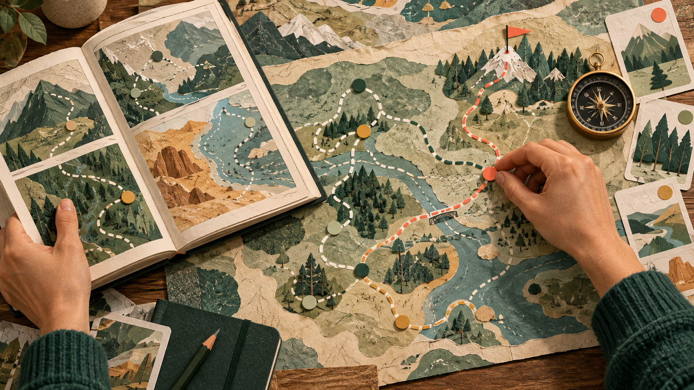
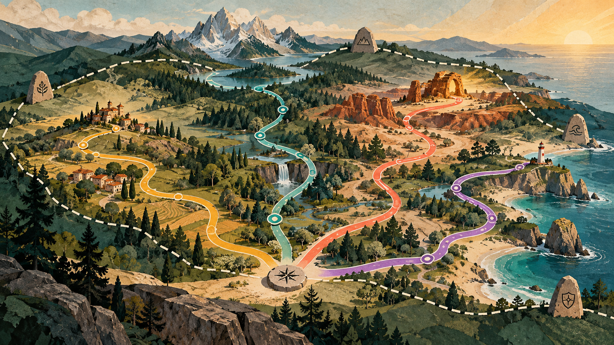

One of the questions I keep returning to in L&D is how we create consistency without making every learning experience look and feel the same.
The challenge
Valuable guidance can be difficult to find and apply.
The experiment
Bring the standards together and simplify the route through them.
The principle
Standards should create confidence, not conformity.
The standards existed
Standards help us protect quality, accessibility, inclusion and the learner experience. They give teams a shared understanding of what good looks like and prevent us from solving the same problems repeatedly.
But useful guidance may be distributed across documents, frameworks, templates and different platforms. People may not know what applies to their project or where to find it.
Sometimes we do not need more standards. We need a better way to use the standards we already have.
Valuable knowledge existed. The challenge was finding the right map at the right moment.
Why call it Atlas?
An atlas is not one map. It is an organised collection of maps, with each one helping someone understand a different place or navigate a particular journey.
I saw our learning standards in a similar way. Accessibility, inclusion, quality, learning design and different formats are not one single set of directions. They are different maps that become useful depending on what someone is trying to create.
Atlas brings those maps together and helps designers identify the guidance relevant to their journey.

The full collection remains available, but the relevant route becomes easier to see.
A design companion
I started by bringing the existing standards together. Then I began playing with different ways of organising them.
Should people search by learning format, audience, business problem or stage of the design process? Could someone describe an idea and allow Atlas to surface the areas they may need to consider?
The experiment moved beyond creating a central library. Atlas could introduce the right questions while an idea is still being shaped, rather than acting only as a compliance check at the end.
Choose your map
One collection can reveal a different route depending on the learning experience. Try the prototype idea below.
A map for simulations
Start with the decisions learners need to practise, then consider psychological safety, useful consequences and a debrief that connects the experience to work.
Decisions and observable behaviours
Realistic consequences
Feedback and structured reflection
Rules and routes
Some guidance establishes a boundary. Other guidance should create a useful starting point.
RequiredAccessibility, privacy, accuracy and safety.
RecommendedPractices that support quality and consistency.
AdaptablePatterns and examples that can be shaped to the context.
ExperimentalSpace to test a new approach and learn from it.
Many routes
Two designers should be able to apply the same principle and create two very different experiences. Consistency should come from the quality of the thinking, not from making every output identical.

What remains unknown?
Will people use the guidance while designing?
Atlas is most useful if it supports decisions early, rather than becoming one more check immediately before approval.
Will it simplify the work?
Bringing information together only helps if the route through it is clearer than the systems and documents it replaces.
Can it preserve professional judgement?
The system should explain what matters and why. The designer should retain ownership of how the principle is applied.
Could it accidentally encourage sameness?
A tool intended to protect creativity could still make outputs more similar. That risk needs to be tested openly.
The experiment changed how I think about what a standard is for.
Standards as conversation
How do you create consistency without restricting creativity?